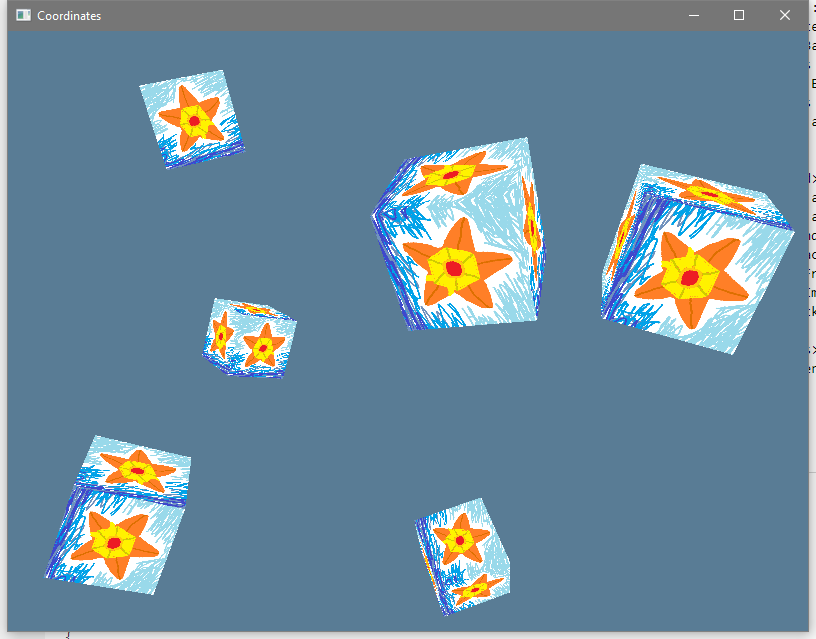

Coordinates
So, when we did the Quad in the textures lesson, you may recall that it was
(x,y) for the base corner, and then width and height for the size, and then we
used the base corner plus the width and height to find the other three corners.
One of the non-base corners added the width to x, one added the height to y, and
one did both of the adds at the same time. How do we know that x and width
go together? Why doesn't x go with height? That's just kinda the convention
that you learn in school. x is horizontal with bigger values going to the
right, and y is vertical with bigger values going up. This is part of the
Cartesian coordinate
system. You might
not remember the name, but you probably remember the whole thing with x going
horizontally and y going vertically.
Here's the deal though. We're not aiming for just 2D drawing. We're aiming for
3D drawing and having 2D be just an occasional specialization of the whole 3D
process. So where does the z direction go? We probably drew that in our little
notebooks. It's hard to draw. On top of that we've got those u and v values
for texture lookups, and those don't have the origin in the middle of the space,
they have it in the top left corner of the texture. What's going on with any of
this nonsense?
Coordinate Systems
Turns out there's not just one "coordinate system", there's many coordinate systems, that we have to deal with. Textures have a coordinate system, the screen has a coordinate system, the scene has a coordinate system, and even each individual model has a coordinate system. What?
Yeah, because floating point numbers have limited accuracy across big ranges, the convention is to have all the points of a single model be in "model space" with relatively small numbers and high accuracy. Then you have a transform function that converts model space positions into world space positions based on the overall position of the model in the world. Then the whole scene is being viewed from some particular place and with a particular perspective, so there's a transformation function to turn world space coordinates into screen space coordinates. Any coordinate out of bounds of the screen space is off-screen, so we don't even draw it.
Transformations
So what's this "function" that shifts points between coordinate spaces? Well, I
kinda made it sound like a code function, but it's actually a math function
(math, singular, this is not a plural "maths" tutorial that's silly).
To translate a 3D point, we make the point into a vec4 with the final position
as 1.0, then we multiply it by a specially prepared 4x4 matrix (the
"transformation matrix"). That gives us a vec4 output, and then to turn it
back into a vec3 we just divide the x, y, and z axis by the w axis.
Vectors? Matrix? w-axis? What?
Ho boy are you in for some fun!
Yes, this (and more) is among the powers that math can grant you, but first you must learn that math.
Learning The Math
I'm not a math teacher, and math is universal enough that I can just tell you to go learn from someone else's math course and you'll be able to use those skills here, so that's exactly what I'll do.
-
If you want just the fundamentals right now you can read the Transformations lesson on
LearnOpenGL.com. Everything before theIn practicesection is totally code free, just a math lesson, so you don't need to have any previous OpenGL or C++ experience. -
When you have the time you should really sit down and learn the subject a little more properly there is a Khan Academy Linear Algebra course, it's a totally free video series style
-
If you like videos, the Essence of Linear Algebra by 3blue1brown is pretty amazing.
Applying The Math
So now that we know about how vectors and matrices work, how do we do this in our code? Well, there's three main options here:
- nalgebra-glm is a crate that provides a
GLM-like interface to the nalgebra crate via type
aliases and such.
nalgebrais a serious math crate for serious math people. I generally wouldn't suggest that you use this crate unless you need to also use thencollidecrate (which is a collision system based on nalgebra). The extreme amount of generics makes error messages far worse when there's a type error, and it also makes your compiles take longer. - vek is the up and coming swiss army math lib that plans
to have an emphasis on SIMD support and is
#![no_std]. I always approve of a lib going for theno_stdtreatment. There's also a whole lot of features you can enable to get extra benefits. - cgmath is the "tried and true beginner's crate" for
graphics math. It's specifically their mandate to keep the focus on computer
graphics. Back in the day this set them apart from
nalgebraall on its own, but now thatvekis coming up fast I'm not sure thatcgmathhas enough to set itself apart.
What should we use? Honestly, if it were just me I'd probably use vek to get
off the ground and then write my own vector math lib with no generics at all
when I wanted to take it easy during some programming day. Seriously, there's
only so much code involved in a vec math lib, you can totally write your own
from scratch.
However, this project isn't really about me, it's about you, the reader.
Accordingly, we're going to be using the nalgebra-glm crate. Out of all the
options, it's definitely got the worst error messages when things go wrong, so
any other crate that you decide to use instead will seem like a breeze in
comparison if you switch to another crate.
[dependencies]
...
nalgebra-glm = "0.2"
The Primary Coordinate Systems
There's actually an unlimited number of possible coordinate systems, but let's focus on a few of them that you're most likely to encounter.
Spatial Coordinates
A lot of the time we're concerned with 3D spatial positioning.
Model Space
Each individual model exists in its own "model space". A model can be anything that's got all of its vertex positions specified in the same space. We'll be using some basic shapes to start, and later on we'll learn how to load model data out of a file.
The important thing about model space is that it's totally arbitrary and unique to each model. You need to decide for yourself what your units are.
World Space
By convention, each model within the scene has a transformation that converts its model space points into world space points. This lets all of the models exist in a single, unified coordinate space that's easier to think about.
As with model space, it's actually fairly arbitrary as to what your scale is. The benefit of a world space is that you're usually doing not only the graphics, but also any physics and such within the world space scale. It unifies the whole simulation to get things into a space with a single origin.
View Space
Graphics only happens from a particular point of observation. Transforming World Space coordinates into how they should appear relative to the observer puts them in "View Space".
Once things are in View Space we can apply a Projection to the view. There's two main projections to pick from:
- Orthographic Projection makes parallel lines stay parallel as they move far away from you. Things are more angular, and even a little unreal looking because of it. You probably want this projection for "artificial" sorts of scenes, like if the user is designing something, or if the user is looking over the scene in an "all knowing" sort of way and the scene is more like a game board, like The Sims or Civilization.
- Perspective Projection makes parallel lines appear to meet the farther away they go from you. Like when looking far down a highway stretching out ahead. This is basically how graphics work in the "Real Life" game, and that's a fairly popular one that people have really become used to. You probably want this projection if the scene is something that is being observed from some sort of "real" perspective (either 1st person or 3rd person).
The important thing here is that the output is no longer arbitrary. Once
you've run your projection matrix has transformed the vertex and the vertex
shader spits that value out, it has to be in what's called "Normalized Device
Coordinates". For gfx-hal this means:
- X: -1.0 to +1.0 range, with +X going to the right
- Y: -1.0 to +1.0 range, with +Y going to the down
- Z: 0.0 to 1.0 range, with +Z going deeper into the screen
Texture Coordinates
In addition to "physical" locations, there's also texture lookups.
With textures the convention is to call the directions u and v, with u
being horizontal and v being vertical.
- U: 0.0 to 1.0, +U goes right
- V: 0.0 to 1.0, +V goes down
Drawing A Cube
So, now that we've got a bit of an understanding of where our numbers need to go, we just adjust the program a little bit. This time instead of doing a lot of work in the fragment shader we're going to have the biggest change with the fragment shader.
The Draw Call
Okay so we're gonna draw one cube. In fact, now that we can put things in different places and have it all show up properly, we'll draw many cubes. What will define our cubes? Not vertex data any more. We're done with that. Now there will be a single set of cube vertex data. Instead, a particular cube will be defined by a model matrix to translate the local model points into world space points. So drawing a series of cubes means we accept a slice of models and then loop over each one.
# #![allow(unused_variables)] #fn main() { pub fn draw_cubes_frame(&mut self, models: &[glm::TMat4<f32>]) -> Result<(), &'static str> { #}
The setup with picking our fences and such is the same as before, but then we get to the new stuff. We need to get a Model-View-Projection Matrix to convert the iconic cube data into a particular cube on the screen. We'll be drawing several cubes, but they'll each have the same View and Projection Matrix, so we'll determine View and Projection first.
View Matrix
The View Matrix turns World Space into "Camera Space". For our View matrix, we
want to use
look_at_lh.
It's "look at, left-handed". You can also have "right-handed" coordinate systems
(it has to do with which direction is positive as you move along each axis), but
gfx-hal is a left-handed coordinate system. Any time nalgebra_glm lets you
pick between the two you should pick the left-handed variant.
- The first argument is where the camera is.
- The second argument is where the camera is looking
- The final argument is a normalized vector for which way is "up". The third
argument can generally default to
[0.0, 1.0, 0.0].
# #![allow(unused_variables)] #fn main() { // DETERMINE VIEW MATRIX (just once) let view = glm::look_at_lh( &glm::make_vec3(&[0.0, 0.0, -5.0]), &glm::make_vec3(&[0.0, 0.0, 0.0]), &glm::make_vec3(&[0.0, 1.0, 0.0]).normalize(), ); #}
Remember that +Z is "into the screen", so we'll be starting a little "back" from the world origin, looking at the world origin, and with the default up vector.
Projection Matrix
The Projection Matrix turns Camera Space into "Normalized Device Coordinates"
(NDC). We start with a perspective matrix, but instead of just perspective_lh,
we need to add another detail. The whole GLM API was setup for OpenGL, which
uses -1.0 to +1.0 for Z, but gfx-hal uses only 0.0 to 1.0 for Z. As a result,
we need to select both the "left-handed", and also _zo variant of the
perspective function, giving us
perspective_lh_zo.
- The first argument is the aspect ratio of the display area. We just put our width / height and we're set.
- The second argument is the field of view angle (in radians). This is something that you should probably let your users customize if you're making a "real" program. A comfortable field of view depends on the user's physical screen size and how close they're sitting to it.
- The third and fourth arguments are the distance to the near and far clipping plane.
Now once we have our Perspective calculation given to us, we need to flip the Y
value. This makes it so that increasing Y values in World Space will cause a
decrease in the Y result within NDC space. That way when things move up in the
world they actually go up on the screen too. Flipping all the Y values might
sound tricky, but we just need to negate a single element in the matrix,
position (1,1).
# #![allow(unused_variables)] #fn main() { // DETERMINE PROJECTION MATRIX (just once) let projection = { let mut temp = glm::perspective_lh_zo(800.0 / 600.0, f32::to_radians(50.0), 0.1, 100.0); temp[(1, 1)] *= -1.0; temp }; #}
Now, yes, I know that maybe technically we shouldn't hard code the aspect ratio, since we went to all that trouble to make our window resizable and everything, but it's fine. Consider that small detail to be homework for the dedicated reader.
A Combined View-Projection Matrix
A matrix multiplication is actually fairly costly. For a 4x4 matrix you're doing 16 dot products. We want to keep that down, so we'll calculate a single "view-projection" matrix right now (since it doesn't change per model), and then use it for each model that we draw.
# #![allow(unused_variables)] #fn main() { // COMBINE THE VIEW AND PROJECTION MATRIX AHEAD OF TIME (just once) let vp = projection * view; #}
Remember, the right side of a stack of matrix transforms is the side that happens "first" within the total transformation. Since we want to go from Model Space to World Space to View Space to NDC Space, we'll have the model on the far right, then the view in the middle, then the projection on the left side. Since this doesn't have the model data yet, it's just projection on the left times the view.
Drawing Those Models
Now that we're all set we bind the various pipeline stuff like before. This
time, instead of writing the push constants once and then calling draw once, we
do a loop over all the models. For each model we compute the final MVP matrix by
going vp * model, push that, and then do a draw call.
# #![allow(unused_variables)] #fn main() { // ONE DRAW CALL PER MODEL MATRIX WE'RE GIVEN for model in models.iter() { // DETERMINE FINAL MVP MATRIX (once per model) let mvp = vp * model; encoder.push_graphics_constants( &self.pipeline_layout, ShaderStageFlags::VERTEX, 0, cast_slice::<f32, u32>(&mvp.data) .expect("this cast never fails for same-aligned same-size data"), ); encoder.draw_indexed(0..36, 0, 0..1); } #}
That's it! We've got cubes!
Well, no, not yet, we have to setup the rest of the pipeline to support our new draw method, but we're well on the way to cubes.
New Buffer Data
Let's put that cube data in our buffers!
Defining A Vertex Type
As promised, we'll finally define a type for the Vertex format.
First, it must be repr(C). Second, we'll give it a static function to spit out
the appropriate Vec<AttributeDesc> for the type. That way the two definitions
sit as close as possible in the code and we're more likely to change both at the
same time if one of them has a change.
# #![allow(unused_variables)] #fn main() { #[derive(Debug, Clone, Copy)] #[repr(C)] pub struct Vertex { xyz: [f32; 3], uv: [f32; 2], } impl Vertex { pub fn attributes() -> Vec<AttributeDesc> { let position_attribute = AttributeDesc { location: 0, binding: 0, element: Element { format: Format::Rgb32Float, offset: 0, }, }; let uv_attribute = AttributeDesc { location: 1, binding: 0, element: Element { format: Format::Rg32Float, offset: size_of::<[f32; 3]>() as ElemOffset, }, }; vec![position_attribute, uv_attribute] } } #}
Define The Cube Vertexes
Now at the minimum a cube needs 8 points. However, to make the textures show up properly we'll need to have 6 quads so that the triangles can wind properly. This means that we'll need 24 vertexes. Unfortunate.
# #![allow(unused_variables)] #fn main() { #[cfg_attr(rustfmt, rustfmt_skip)] const CUBE_VERTEXES: [Vertex; 24] = [ // Face 1 (front) Vertex { xyz: [0.0, 0.0, 0.0], uv: [0.0, 1.0] }, /* bottom left */ Vertex { xyz: [0.0, 1.0, 0.0], uv: [0.0, 0.0] }, /* top left */ Vertex { xyz: [1.0, 0.0, 0.0], uv: [1.0, 1.0] }, /* bottom right */ Vertex { xyz: [1.0, 1.0, 0.0], uv: [1.0, 0.0] }, /* top right */ // Face 2 (top) Vertex { xyz: [0.0, 1.0, 0.0], uv: [0.0, 1.0] }, /* bottom left */ Vertex { xyz: [0.0, 1.0, 1.0], uv: [0.0, 0.0] }, /* top left */ Vertex { xyz: [1.0, 1.0, 0.0], uv: [1.0, 1.0] }, /* bottom right */ Vertex { xyz: [1.0, 1.0, 1.0], uv: [1.0, 0.0] }, /* top right */ // Face 3 (back) Vertex { xyz: [0.0, 0.0, 1.0], uv: [0.0, 1.0] }, /* bottom left */ Vertex { xyz: [0.0, 1.0, 1.0], uv: [0.0, 0.0] }, /* top left */ Vertex { xyz: [1.0, 0.0, 1.0], uv: [1.0, 1.0] }, /* bottom right */ Vertex { xyz: [1.0, 1.0, 1.0], uv: [1.0, 0.0] }, /* top right */ // Face 4 (bottom) Vertex { xyz: [0.0, 0.0, 0.0], uv: [0.0, 1.0] }, /* bottom left */ Vertex { xyz: [0.0, 0.0, 1.0], uv: [0.0, 0.0] }, /* top left */ Vertex { xyz: [1.0, 0.0, 0.0], uv: [1.0, 1.0] }, /* bottom right */ Vertex { xyz: [1.0, 0.0, 1.0], uv: [1.0, 0.0] }, /* top right */ // Face 5 (left) Vertex { xyz: [0.0, 0.0, 1.0], uv: [0.0, 1.0] }, /* bottom left */ Vertex { xyz: [0.0, 1.0, 1.0], uv: [0.0, 0.0] }, /* top left */ Vertex { xyz: [0.0, 0.0, 0.0], uv: [1.0, 1.0] }, /* bottom right */ Vertex { xyz: [0.0, 1.0, 0.0], uv: [1.0, 0.0] }, /* top right */ // Face 6 (right) Vertex { xyz: [1.0, 0.0, 0.0], uv: [0.0, 1.0] }, /* bottom left */ Vertex { xyz: [1.0, 1.0, 0.0], uv: [0.0, 0.0] }, /* top left */ Vertex { xyz: [1.0, 0.0, 1.0], uv: [1.0, 1.0] }, /* bottom right */ Vertex { xyz: [1.0, 1.0, 1.0], uv: [1.0, 0.0] }, /* top right */ ]; #}
Define The Cube Indexes
Of course, we need some indexes to go with the vertexes. We have to be very careful here because if you get the winding on your triangles wrong things look very bad very fast.
# #![allow(unused_variables)] #fn main() { #[cfg_attr(rustfmt, rustfmt_skip)] const CUBE_INDEXES: [u16; 36] = [ 0, 1, 2, 2, 1, 3, // front 4, 5, 6, 7, 6, 5, // top 10, 9, 8, 9, 10, 11, // back 12, 14, 13, 15, 13, 14, // bottom 16, 17, 18, 19, 18, 17, // left 20, 21, 22, 23, 22, 21, // right ]; #}
Other Stuff
At this point you can figure out the rest yourself, and you can look at the
final code if there's a bit you're missing, but basically we want to fix up
HalState to have a field for the cube vertex buffer and the cube index buffer.
# #![allow(unused_variables)] #fn main() { cube_vertices: BufferBundle<back::Backend, back::Device>, cube_indexes: BufferBundle<back::Backend, back::Device>, #}
And then you want to fill those up just once during initialization.
# #![allow(unused_variables)] #fn main() { let cube_vertices = BufferBundle::new( &adapter, &device, size_of_val(&CUBE_VERTEXES), BufferUsage::VERTEX, )?; // Write the vertex data just once. unsafe { let mut data_target = device .acquire_mapping_writer(&cube_vertices.memory, 0..cube_vertices.requirements.size) .map_err(|_| "Failed to acquire an index buffer mapping writer!")?; data_target[..CUBE_VERTEXES.len()].copy_from_slice(&CUBE_VERTEXES); device .release_mapping_writer(data_target) .map_err(|_| "Couldn't release the index buffer mapping writer!")?; } let cube_indexes = BufferBundle::new( &adapter, &device, size_of_val(&CUBE_INDEXES), BufferUsage::INDEX, )?; // Write the index data just once. unsafe { let mut data_target = device .acquire_mapping_writer(&cube_indexes.memory, 0..cube_indexes.requirements.size) .map_err(|_| "Failed to acquire an index buffer mapping writer!")?; data_target[..CUBE_INDEXES.len()].copy_from_slice(&CUBE_INDEXES); device .release_mapping_writer(data_target) .map_err(|_| "Couldn't release the index buffer mapping writer!")?; } #}
In the graphics pipeline we need to change the rasterizer so that the back faces of each triangle are culled. Without the culling, you'll get a bizarre looking thing where the insides and the outsides of the cubes are drawn at the same time. Like something Escher might draw.
# #![allow(unused_variables)] #fn main() { let rasterizer = Rasterizer { depth_clamping: false, polygon_mode: PolygonMode::Fill, cull_face: Face::BACK, front_face: FrontFace::Clockwise, depth_bias: None, conservative: false, }; #}
Finally we need to change up the push_constants to be 16 floats in the Vertex shader instead of 1 float in the fragment shader:
# #![allow(unused_variables)] #fn main() { let push_constants = vec![(ShaderStageFlags::VERTEX, 0..16)]; #}
New Shaders
Of course we'll need our GLSL to use the new data properly too.
Vertex Shader
This is the "interesting" part, by which I mean that it's where the coordinate spaces all meet up and shift around. However, it's not very interesting code to just look at, since it boils down to basically one expression.
I said above that the "right most" part of a matrix transform stack happens
"first", but what's it happening to? The data vector at the very far right of
the whole final equation of course. As I glibly said at the start of the
article, we take our 3D coordinate, add a w component of 1.0, and then
multiply it through our big matrix stack. Whatever comes out the left side is
the NDC of the position.
#version 450
layout (push_constant) uniform PushConsts {
mat4 mvp;
} push;
layout (location = 0) in vec3 position;
layout (location = 1) in vec2 vert_uv;
layout (location = 0) out gl_PerVertex {
vec4 gl_Position;
};
layout (location = 1) out vec2 frag_uv;
void main()
{
gl_Position = push.mvp * vec4(position, 1.0);
frag_uv = vert_uv;
}
Fragment Shader
The fragment shader this time is simplified from last time. We don't need any color shifting or anything at this point, just having some boxes should be interesting enough to look at.
#version 450
layout(set = 0, binding = 0) uniform texture2D tex;
layout(set = 0, binding = 1) uniform sampler samp;
layout (location = 1) in vec2 frag_uv;
layout (location = 0) out vec4 color;
void main()
{
color = texture(sampler2D(tex, samp), frag_uv);
}
Update The main Functionality
So our do_the_render function simplifies down to just one line:
# #![allow(unused_variables)] #fn main() { fn do_the_render(hal_state: &mut HalState, local_state: &LocalState) -> Result<(), &'static str> { hal_state.draw_cubes_frame(&local_state.cubes) } #}
Time Per Frame
Last lesson we just tracked the time since the program started. That's fine if your animation follows a perfect and immutable pattern (like sine wave shifting between two modes), but most things aren't like that. Most of the time we want to know the amount of time per frame so that we can apply that much time towards an animation that might or might not be happening.
So we'll start tracking a time per frame. This will be a very basic "Semi-fixed Time Step" scheme (there's an article all about it). Basically, each time through the loop we'll accumulate some time. If there's enough time accumulated we'll advance the "state" of our program (in our case we rotate the cubes some).
UserInput
First we have to adjust the UserInput type so that the time taken is part of
the input for the frame. It could go just about anywhere as long as we check the
time once per frame, but if we consider the timing to be part of the input then
at some future point we could just start recording inputs and then playing them
back and they'll play back with the right associated timings. Bam, we've got
looped replay for practically nothing.
# #![allow(unused_variables)] #fn main() { #[derive(Debug, Clone, Default)] pub struct UserInput { pub end_requested: bool, pub new_frame_size: Option<(f64, f64)>, pub new_mouse_position: Option<(f64, f64)>, pub seconds: f32, } #}
Now when we make a UserInput value we'll also take the timestamp from the last frame:
# #![allow(unused_variables)] #fn main() { pub fn poll_events_loop(events_loop: &mut EventsLoop, last_timestamp: &mut Instant) -> Self { #}
And after the call to poll_events we also set the seconds field.
# #![allow(unused_variables)] #fn main() { output.seconds = { let now = Instant::now(); let duration = now.duration_since(*last_timestamp); *last_timestamp = now; duration.as_secs() as f32 + duration.subsec_nanos() as f32 * 1e-9 }; #}
LocalState
Now we update LocalState to track the spare time we had from last time:
# #![allow(unused_variables)] #fn main() { #[derive(Debug, Clone, Default)] pub struct LocalState { pub frame_width: f64, pub frame_height: f64, pub mouse_x: f64, pub mouse_y: f64, pub cubes: Vec<glm::TMat4<f32>>, pub spare_time: f32, } #}
And every frame when we update, we'll use 1/60th of a second of time if it's available. This makes the physics work as smoothly as possible. Of course, in a full program you'd need some more checks before you blindly perform however many physics frames all at once. If the system clock goes backwards maybe skip doing physics that frame. If the system clock jumps forward too many frames at once maybe cap out at some handful and discard the rest. And ideally you'd need to make sure that your computation time per frame is on average less than the actual time otherwise your leftover time would grow forever and the system would chug slower and slower. Time has a lot of fiddly bits to get right if you want to be robust about it.
# #![allow(unused_variables)] #fn main() { impl LocalState { pub fn update_from_input(&mut self, input: UserInput) { if let Some(frame_size) = input.new_frame_size { self.frame_width = frame_size.0; self.frame_height = frame_size.1; } if let Some(position) = input.new_mouse_position { self.mouse_x = position.0; self.mouse_y = position.1; } assert!(self.frame_width != 0.0 && self.frame_height != 0.0); let x_axis = (self.mouse_x / self.frame_width) as f32; let y_axis = (self.mouse_y / self.frame_height) as f32; self.spare_time += input.seconds; const ONE_SIXTIETH: f32 = 1.0 / 60.0; while self.spare_time > 0.0 { for (i, cube_mut) in self.cubes.iter_mut().enumerate() { let r = ONE_SIXTIETH * 30.0 * (i as f32 + 1.0); *cube_mut = glm::rotate( &cube_mut, f32::to_radians(r), // if you change z to 0.0 you need to assert that x_axis and y_axis // don't also end up as 0.0, otherwise you'll get NaN when you // normalize and then you'll get NaN in your matrix and then nothing // will display. &glm::make_vec3(&[x_axis, y_axis, 0.3]).normalize(), ); } self.spare_time -= ONE_SIXTIETH; } } } #}
As to the actual "physics" we're doing, we'll just rotate the cubes some. Since I still want a little interaction, so we'll have the mouse position control the angle of rotation.
And now we got spinny boxes!

As always, full code is available in the examples directory.